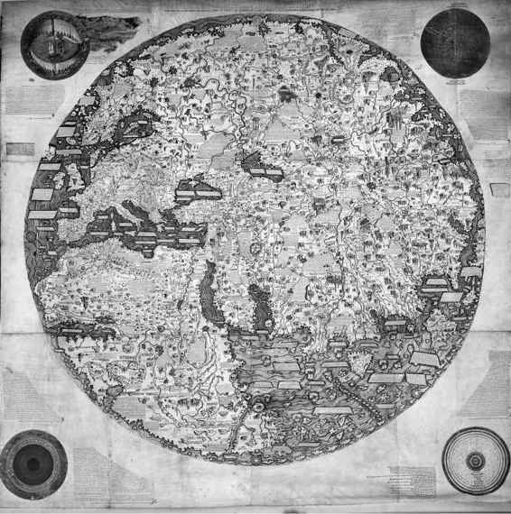
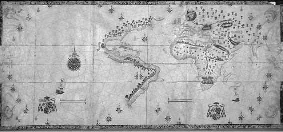
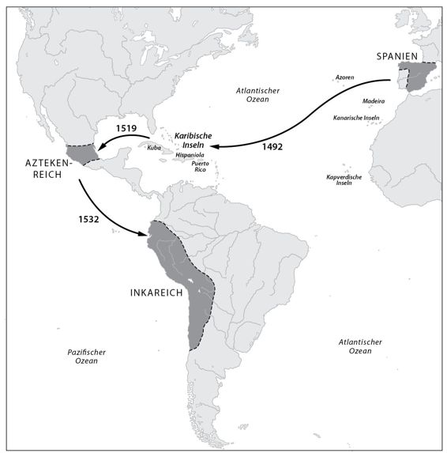

Kapitel 15
Wissenschaft und Weltreich
Wie weit ist die Sonne von der Erde entfernt? Diese Frage beschäftigte die Astronomen der frühen Neuzeit, vor allem nachdem Kopernikus erklärt hatte, dass nicht die Erde im Mittelpunkt des Universums stehe, sondern die Sonne. Die Astronomen und Mathematiker, die sich an ihrer Beantwortung versuchten, kamen auf sehr unterschiedliche Ergebnisse. Erst im 18. Jahrhundert wurde eine zuverlässige Methode zur Bestimmung der Entfernung entdeckt. Alle paar Jahre zieht der Planet Venus von der Erde aus gesehen an der Sonnenscheibe vorüber. Wie lange er dafür benötigt, hängt davon ab, von wo aus dieses Schauspiel beobachtet wird. Wenn also ein sogenannter Venus-Durchgang von mehreren Kontinenten aus beobachtet wurde, konnten Astronomen mit Hilfe einer einfachen trigonometrischen Berechnung die exakte Entfernung zwischen Erde und Sonne bestimmen.
Astronomen wussten, dass das Himmelsphänomen in den Jahren 1761 und 1769 bevorstand. Daher wurden Expeditionen von Europa in alle Himmelsrichtungen ausgesandt, um den Venus-Durchgang von so vielen Punkten wie möglich zu beobachten. Im Jahr 1761 verfolgten Wissenschaftler das Ereignis von Sibirien, Nordamerika, Madagaskar und Südafrika aus. Als sich der zweite Durchgang im Jahr 1769 näherte, mobilisierte die europäische Wissenschaftsgemeinde alle Anstrengungen und schickte Beobachter bis nach Nordkanada und Kalifornien (was damals Wildnis war). Die Royal Society von London, die renommierteste Wissenschaftsvereinigung ihrer Zeit, kam zu dem Schluss, dass auch das noch nicht ausreichte. Um die Entfernung zwischen Erde und Sonne so exakt wie möglich zu ermitteln, sollte ein Beobachter bis in den Südwestpazifik reisen.
Die Royal Society scheute weder Kosten noch Mühen und entsandte den bekannten Astronomen Charles Green nach Tahiti. Es wäre jedoch Geldverschwendung gewesen, eine wissenschaftliche Expedition in eine derart weit entfernte und unbekannte Gegend zu schicken, um eine einzige astronomische Beobachtung zu machen. Also wurde Green von acht weiteren Wissenschaftlern aus verschiedenen Disziplinen begleitet, allen voran die Botaniker Joseph Banks und Daniel Solander. Mit von der Partie waren außerdem einige Maler, die Inseln, Pflanzen, Tiere und Menschen zeichnen sollten, denen sie auf ihrer Reise begegneten. Die Expedition wurde mit neuesten wissenschaftlichen Geräten ausgestattet, die Banks und die Royal Society angeschafft hatten. Das Kommando führte Kapitän James Cook, ein erfahrener Seemann, Geograph und Ethnograph.
Die Expedition stach 1768 von England aus in See, beobachtete wie geplant 1769 den Venusdurchgang auf Tahiti, erkundete verschiedene Pazifikinseln, besuchte Australien und Neuseeland und kehrte 1771 beladen mit Bergen von astronomischen, geographischen, meteorologischen, botanischen, zoologischen und anthropologischen Daten aus dem Pazifik, Australien und Neuseeland wieder nach Hause zurück. Die Bedeutung der Cook-Expedition lässt sich gar nicht hoch genug einschätzen. Mit ihren Funden brachte sie zahlreiche Disziplinen voran, und mit ihren wundersamen Geschichten aus dem Südpazifik beflügelte sie die Fantasie der Europäer und inspirierte Generationen von künftigen Wissenschaftlern.
Die Expedition hatte auch erhebliche Bedeutung für die Medizin. Weltumseglungen wurden damals durch eine geheimnisvolle Krankheit namens Skorbut beeinträchtigt, die regelmäßig die Hälfte der Schiffsbesatzung dahinraffte. Die Erkrankten wurden erst lustlos und träge, und ihr Zahnfleisch begann zu bluten. Später fielen ihnen die Zähne aus, am ganzen Körper brachen Wunden auf, sie litten unter Fieber und Gelbsucht und konnten ihre Arme und Beine nicht mehr bewegen. Die britische Marine verlor mehr Matrosen durch Skorbut als durch feindliche Kanonen. Zwischen dem 16. und dem 18. Jahrhundert sollen insgesamt 2 Millionen Seeleute an der Krankheit gestorben sein! Es gab zahlreiche Spekulationen über die Ursachen von Skorbut, und es wurden viele Versuche unternommen, der Krankheit beizukommen, doch ohne Erfolg: Die Besatzungen starben nach wie vor wie die Fliegen. Die Wende kam im Jahr 1747, als ein englischer Arzt namens James Lind ein Experiment mit Seeleuten durchführte, die bereits an Skorbut erkrankt waren. Er teilte sie in verschiedene Gruppen ein und verabreichte jeder eine andere Behandlung. Eine Gruppe bekam Zitrusfrüchte, ein verbreitetes Hausmittel gegen Skorbut. Die Patienten aus dieser Gruppe erholten sich rasch. Lind wusste noch nicht, dass Skorbut durch Vitamin C-Mangel hervorgerufen wird. Auf langen Seereisen ernährten sich die Besatzungen in der Regel nur von Schiffszwieback und Trockenfleisch und nahmen kaum Obst oder Gemüse zu sich, mit denen sie ihrem Körper Vitamin C zugeführt hätten.
Die britische Marine betrachtete Linds Experimente mit Skepsis, doch James Cook war überzeugt. Er beschloss, die Erkenntnisse des Arztes auf seiner Weltreise zu überprüfen. Cook nahm eine Ladung Sauerkraut an Bord und bestand darauf, dass seine Matrosen bei jedem Landgang große Mengen frisches Obst und Gemüse zu sich nahmen. Auf der gesamten Expedition starb kein einziger seiner Matrosen an Skorbut. In den folgenden Jahrzehnten machten es die Flotten der Welt Cook nach und retteten so das Leben von ungezählten Matrosen und Reisenden.85
Cooks Expedition hatte jedoch auch eine dunkle Seite. Cook war nicht nur ein erfahrener Seemann und Geograph, er war auch ein Offizier der Marine. Diese gab ihm 85 gut bewaffnete Matrosen und Soldaten mit und rüstete sein Schiff mit Kanonen, Musketen, Schießpulver und anderen Waffen aus. Ein Gutteil der gesammelten Informationen – vor allem astronomische, geographische, meteorologische und anthropologische Daten – war natürlich auch von großem politischen und militärischen Wert. Die Entdeckung einer wirkungsvollen Behandlung gegen Skorbut festigte die Vorherrschaft der Briten auf den Weltmeeren und erlaubte ihnen, Armeen auf die andere Seite der Erde zu schicken. Cook beanspruchte viele der von ihm »entdeckten« Inseln für die britische Krone, allen voran Australien. Seine Expedition legte den Grundstein für die britische Besetzung des Südwestpazifiks, die Eroberung Australiens, Tasmaniens und Neuseelands, die Besiedlung der neuen Kolonien durch Millionen von Europäern und die Auslöschung der einheimischen Kulturen und der meisten Ureinwohner.86
Im Jahrhundert nach Cooks Expedition nahmen europäische Siedler den Ureinwohnern Australiens und Neuseelands den größten Teil des fruchtbaren Landes ab. Die einheimische Bevölkerung brach um 90 Prozent ein, und die wenigen Überlebenden wurden von einem erbarmungslosen rassistischen System unterjocht. Für die australischen Aborigines und die neuseeländischen Maoris markierte die Cook-Expedition den Beginn einer Katastrophe, von der sie sich nie wieder erholten.
Noch schlimmer erging es den Ureinwohnern von Tasmanien. Nachdem sie zehntausend Jahre lang in Isolation überlebt hatten, wurden sie im Jahrhundert nach Cooks Ankunft vollständig ausgelöscht. Die europäischen Siedler vertrieben sie zunächst aus den fruchtbarsten Regionen der Insel, und als sie sich dann auch noch die Wildnis unter den Nagel reißen wollten, machten sie Jagd auf die Ureinwohner und ermordeten sie systematisch. Die wenigen Überlebenden wurden in einem christlichen Konzentrationslager zusammengepfercht, wo sie von wohlmeinenden aber ignoranten Missionaren indoktriniert und in der modernen Lebensweise unterwiesen wurden. Die Tasmanen sollten Lesen und Schreiben, die christliche Lehre sowie »nützliche Fähigkeiten« wie Nähen und Säen lernten. Doch sie weigerten sich. Stattdessen verfielen sie in Melancholie, bekamen keine Kinder mehr, verloren jegliches Interesse am Leben und wählten schließlich den einzigen Fluchtweg aus der modernen Welt der Wissenschaft und des Fortschritts – den Tod.
Doch selbst nach dem Tod wurden sie weiter von Wissenschaft und Fortschritt verfolgt. Im Namen der Erkenntnis bemächtigten sich Anthropologen und Museumsdirektoren der Leichen der letzten Tasmanier. Sie wurden seziert, gewogen, gemessen und in gelehrten Artikeln beschrieben. Ihre Schädel und Skelette wurden in Museen und anthropologischen Sammlungen ausgestellt. Erst 1976 bestattete das Tasmanian Museum das Skelett von Truganini, der letzten Ureinwohnerin Tasmaniens, die hundert Jahre zuvor gestorben war. Das English Royal College of Surgeons, die Königliche Chirurgenschule in Großbritannien, hatte noch bis 2002 Haar- und Hautproben von Truganini in ihrem Besitz.
Handelte es sich bei der Cook-Expedition um eine wissenschaftliche Erkundungsmission, die neues Wissen sammeln sollte und von Streitkräften begleitet wurde, die für ihren Schutz sorgen sollten? Oder handelte es sich um eine militärische Expedition, die neue Länder erobern sollte und von einigen Wissenschaftlern begleitet wurde, die sich die Gelegenheit nicht entgehen lassen und einige Untersuchungen durchführen wollten? Beide Fragen kann man mit Ja beantworten. Die wissenschaftliche Revolution und der moderne Imperialismus sind zwei Seiten ein und derselben Medaille. Teilnehmer wie James Cook und der Botaniker Joseph Banks konnten Wissenschaft nicht vom Imperium unterscheiden. Genauso wenig wie die arme Truganini.
Warum ausgerechnet Europa?
Es gehört zu den erstaunlicheren Wendungen der Geschichte, dass die Bewohner einer Insel im Nordatlantik Ende des 18. Jahrhunderts einen Kontinent auf der Südhalbkugel des Planeten eroberten. Über Jahrtausende hinweg waren die Britischen Inseln und ganz Westeuropa nichts als ein unbedeutender Wurmfortsatz des Mittelmeerraums gewesen. Hier passierte nichts, was von Bedeutung gewesen wäre. Auch das Römische Reich, das einzige europäische Imperium, verdankte seinen Reichtum den Provinzen in Nordafrika, dem Balkan und dem Nahen Osten. Die westeuropäischen Provinzen Roms waren ein armer und unterentwickelter »Wilder Westen«, der außer Erzen und Sklaven nichts zu bieten hatte. Der Norden Europas war sogar derart verlassen und rückständig, dass sich die Römer gar nicht erst die Mühe machten, ihn zu erobern.
Erst gegen Ende des 15. Jahrhunderts wurde Europa zu einem Treibhaus militärischer, politischer, wirtschaftlicher und kultureller Entwicklung. Zwischen 1500 und 1750 nahm Westeuropa an Fahrt auf und schwang sich zum Herrn des amerikanischen Doppelkontinents und der Weltmeere auf. Doch den asiatischen Großmächten waren die Europäer noch immer nicht gewachsen. Die Meere eroberten sie nur deshalb, weil sich die Herrscher des Ostens nicht dafür interessierten. Die frühe Neuzeit war das Goldene Zeitalter des Osmanischen Reichs im Mittelmeerraum, des Safawidenreichs in Persien, des Mogulreichs in Indien und der Ming- und Qing-Dynastien in China. Sie erweiterten ihre Territorien beträchtlich und genossen einen beispiellosen demographischen und wirtschaftlichen Aufschwung. Noch im Jahr 1775 zeichnete Asien für 80 Prozent der Weltwirtschaft verantwortlich. Indien und China machten zusammen allein zwei Drittel der weltweiten Produktion aus. Im Vergleich dazu war Europa ein wirtschaftlicher Zwerg.87
Erst zwischen 1750 und 1850 verlagerte sich das globale Machtzentrum nach Europa, als die Europäer die asiatischen Mächte in einer Reihe von Kriegen erniedrigten und weite Teile Asiens eroberten. Im Jahr 1900 beherrschten die Europäer unangefochten die Weltwirtschaft und den größten Teil der Erde. Im Jahr 1950 waren Westeuropa und die Vereinigten Staaten zusammen für mehr als 50 Prozent der Weltwirtschaft verantwortlich, während Chinas Anteil auf 5 Prozent zusammengeschrumpft war.88 Unter der Ägide der Europäer entstanden eine neue Weltordnung und eine neue Weltkultur. Heute sind die meisten Menschen der Welt kulturell gesehen Europäer, auch wenn sie das nicht so gern zugeben. So sehr sie gegen Europa wettern mögen, die meisten Menschen auf unserem Planeten sehen Politik, Medizin, Krieg und Wirtschaft durch eine europäische Brille. Selbst die aufstrebende Wirtschaftsmacht China, die demnächst zur führenden Weltmacht aufsteigen könnte, wird auf einem europäischen Produktions- und Finanzierungsmodell errichtet.
Wie gelang es den Europäern, aus ihrem entlegenen Winkel herauszukommen und die ganze Welt zu erobern? Als einer der Gründe werden oft die europäischen Wissenschaften genannt. Niemand würde anzweifeln, dass die Europäer ihre Vorherrschaft nach 1850 zu einem Gutteil dem militärisch-industriell-wissenschaftlichen Komplex und seinen technologischen Wunderwerken verdankten. Alle erfolgreichen Kolonialreiche des 19. und 20. Jahrhunderts förderten die wissenschaftliche Forschung in der Hoffnung auf technologische Innovationen, und viele Wissenschaftler brachten ihre Zeit damit zu, Waffen, Medizin und Maschinen für ihre imperialistischen Geldgeber zu entwickeln. Wenn sie ihren afrikanischen Feinden gegenüberstanden, sagten europäische Soldaten oft: »Egal was passiert, wir haben Maschinengewehre und sie nicht.« Aber genauso entscheidend war die zivile Technologie. Die Soldaten wurden mit Dosennahrung verpflegt, mit Eisenbahnen und Dampfschiffen transportiert und mit einem neuen Arsenal von Arzneimitteln am Leben erhalten. Diese logistischen Fortschritte waren bei der Eroberung von Afrika wichtiger als die Maschinengewehre.
Vor 1850 war die Situation noch eine ganz andere. Der militärisch-industriell-wissenschaftliche Komplex steckte in den Kinderschuhen, die Früchte der wissenschaftlichen Revolution waren noch nicht reif, und der technische Vorsprung der Europäer gegenüber den asiatischen und afrikanischen Mächten war gering. Als James Cook im Jahr 1770 in Australien anlegte, verfügte er zwar über bessere Technologie als die Aborigines, aber das traf auch auf die Osmanen und Chinesen zu. Warum wurde Australien dann von Kapitän James Cook erkundet und kolonisiert, und nicht von Kapitän Wan Zhengse oder Kapitän Hussein Pascha? Und wenn die Europäer im Jahr 1770 gegenüber den Muslimen, Indern und Chinesen noch keinen nennenswerten technischen Vorsprung hatten, wie gelang es ihnen dann, im Laufe der nächsten hundert Jahre den Graben derart zu vergrößern?
Warum entwickelte sich der militärisch-industriell-wissenschaftliche Komplex in Europa und nicht in Indien? Als Großbritannien zum großen Sprung ansetzte, warum gelang es Frankreich, Deutschland und den Vereinigten Staaten, so schnell nachzuziehen, während China immer weiter zurückblieb? Und als der Abstand zwischen industrialisierten und nicht-industrialisierten Nationen zum wirtschaftlichen und politischen Machtfaktor wurde, warum gelang es dann Ländern wie Russland, Italien und Österreich, den Anschluss zu halten, nicht aber Persien, Ägypten und dem Osmanischen Reich? Die Technologie der ersten Industriellen Revolution war schließlich nicht sonderlich komplex. Fiel es den Chinesen und Osmanen so schwer, Dampfmaschinen zu bauen, Maschinengewehre zu produzieren und Bahnschienen zu verlegen?
Die erste kommerzielle Bahnlinie nahm 1830 in Großbritannien ihren Betrieb auf. Im Jahr 1850 waren die westlichen Nationen von einem Schienennetz von 40000 Kilometern Länge überzogen – aber Asien, Afrika und Lateinamerika kamen zusammen auf gerade einmal 400 Kilometer! Bis zum Jahr 1880 war das westliche Schienennetz auf 350000 Kilometer angewachsen, während der Rest der Welt gerade einmal auf 35000 Kilometer kam (wovon die Briten den größten Teil in ihrer Kolonie Indien verlegt hatten).89 In China wurde die erste Bahnlinie im Jahr 1876 in Betrieb genommen. Sie war 25 Kilometer lang und wurde von Europäern eingerichtet – die chinesische Regierung zerstörte sie schon ein Jahr darauf. Im Jahr 1880 gab es nicht einen einzigen Eisenbahnzug im ganzen Chinesischen Reich! Reichten den Chinesen 50 Jahre nicht, um die Bedeutung der Eisenbahn zu erkennen und zu lernen, wie man Schienen verlegt und Bahnlinien betreibt? In Persien wurde die erste Eisenbahnlinie im Jahr 1888 eröffnet. Sie verband Teheran mit einer zehn Kilometer entfernten Pilgerstätte und wurde von einem belgischen Unternehmen eingerichtet und betrieben. Im Jahr 1950 kam das gesamte Schienennetz des Iran – einem Land, das sieben Mal so groß ist wie Großbritannien – auf magere 2500 Kilometer.90
Es ist nicht so, als hätte den Chinesen und Persern das technische Knowhow gefehlt – Dampfmaschinen ließen sich schließlich ganz einfach kaufen oder nachbauen. Was ihnen fehlte, waren die Werte und Mythen, der juristische Apparat und die gesellschaftlichen und politischen Strukturen, die im Westen über Jahrhunderte hinweg herangereift waren und sich nicht so einfach kopieren und verinnerlichen ließen. Frankreich und die Vereinigten Staaten konnten rasch in die Fußstapfen von Großbritannien treten, weil die Franzosen und Amerikaner viele Mythen und Gesellschaftsstrukturen mit den Briten gemeinsam hatten. Die Chinesen und Perser konnten nicht Schritt halten, weil sie ganz anders dachten und sich anders organisierten.
Diese Erklärung wirft ein neues Licht auf die Jahrhunderte zwischen 1500 und 1850. In diesem Zeitraum hatte Europa zwar keinen erkennbaren technischen, politischen, militärischen oder wirtschaftlichen Vorsprung gegenüber asiatischen Mächten. Doch Europa baute sich ein einmaliges Potenzial auf, dessen Bedeutung um das Jahr 1850 schlagartig sichtbar wurde. Die scheinbare Gleichheit zwischen Europa, China und der islamischen Welt, die noch 1750 Bestand hatte, war in Wirklichkeit eine Illusion. Stellen Sie sich zwei Maurer vor, die jeder einen Turm bauen. Einer benutzt Holz und Lehmziegel, der andere Stahl und Beton. Zunächst scheinen sich die beiden Methoden nicht allzu sehr voneinander zu unterscheiden, denn beide Türme wachsen mit derselben Geschwindigkeit. Aber nachdem sie eine kritische Höhe erreicht haben, trägt das Gerüst aus Holz und Lehm nicht mehr und fällt in sich zusammen, während der Turm aus Stahl und Beton immer weiter wächst und kein Ende in Sicht scheint.
Was genau war dieses einmalige Potenzial, das sich die Europäer in der frühen Neuzeit anlegten und mit dessen Hilfe sie im 19. und 20. Jahrhundert die ganze Welt eroberten? Auf diese Frage gibt es zwei Antworten, die einander ergänzen: die modernen Wissenschaften und der Kapitalismus. Die Europäer lernten, wissenschaftlich und kapitalistisch zu denken und zu handeln, lange bevor sie einen spürbaren technischen Vorsprung daraus zogen. Als ihre Technologie Früchte trug, waren die Europäer besser als alle anderen in der Lage, sie zu nutzen, und deshalb eroberten sie die Welt. Es ist daher kein Zufall, dass Wissenschaft und Kapitalismus das wichtigste Erbe sind, das der europäische Imperialismus der post-europäischen Welt des 21. Jahrhunderts hinterlässt. Europa und die Europäer mögen nicht mehr die Welt beherrschen, doch Wissenschaft und Kapital werden immer stärker. Den Siegeszug des Kapitalismus wollen wir uns im nächsten Kapitel ansehen. In diesem Kapitel geht es um die Romanze zwischen dem europäischen Imperialismus und den modernen Wissenschaften.
Die Eroberungsmentalität
Die modernen Wissenschaften wuchsen mit den europäischen Imperien. Natürlich stehen sie tief in der Schuld der alten wissenschaftlichen Traditionen, zum Beispiel des antiken Griechenland, Chinas, Indiens und des Islam. Doch erst in der frühen Neuzeit nahmen die modernen Wissenschaften ihre besondere Form an, Hand in Hand mit der Expansion der Kolonialreiche Spaniens, Portugals, Großbritanniens, Frankreichs, Russlands und der Niederlande. Während der frühen Neuzeit lieferten Chinesen, Inder, Muslime, amerikanische Ureinwohner und Polynesier noch wichtige Beiträge zur wissenschaftlichen Revolution. Adam Smith und Karl Marx lasen die Abhandlungen von muslimischen Wirtschaftswissenschaftlern, medizinische Handbücher nahmen Behandlungsmethoden von indianischen Heilern auf und die westliche Anthropologie wurde durch Auskünfte von polynesischen Ureinwohnern bereichert. Doch bis zur Mitte des 20. Jahrhunderts waren es die europäischen Weltmächte, die all die zahllosen wissenschaftlichen Erkenntnisse zusammenführten und umfassende wissenschaftliche Disziplinen schafften. Der Ferne Osten und die islamische Welt brachten Menschen hervor, die den westlichen Denkern an Neugierde und Intelligenz in nichts nachstanden. Doch zwischen 1500 und 1950 machten sie keine einzige Entdeckung, die zum Verständnis der Naturwissenschaften auch nur annähernd so viel beigetragen hätten wie die eines Isaac Newton oder Charles Darwin.
Das heißt nicht, dass die Europäer ein besonderes Wissenschaftsgen besäßen oder dass sie auf alle Ewigkeit die Physik oder die Biologie beherrschen werden. Es heißt nur, dass die Europäer dank eines historischen Zufalls die wissenschaftliche Revolution anführten. Genau wie der Islam kein Monopol der Araber mehr ist, ist auch die Wissenschaft längst kein Monopol der Europäer mehr.
Wie entstand diese historische Verbindung zwischen den modernen Wissenschaften und dem europäischen Imperialismus? Im 19. und 20. Jahrhundert war es die Technologie, die diese Allianz verstärkte, doch in der frühen Neuzeit hatte dieser Faktor noch kaum Bedeutung. Die Verbindung zwischen dem Pflanzen suchenden Botaniker und dem Kolonien suchenden Kapitän ist eine ähnliche Weltsicht. Sowohl der Wissenschaftler als auch der Eroberer begann mit einem Eingeständnis seines Unwissens (»Ich weiß nicht, was mich da draußen erwartet«). Um diesen Mangel zu beheben, machten sich beide auf die Suche nach neuen Erkenntnissen. Und beide hofften, dass sie mit diesem neuen Wissen schließlich die Welt beherrschen würden.
*
Von Beginn an waren die europäischen Entdeckungsfahrten immer auch Eroberungszüge, und umgekehrt. Das macht die Einmaligkeit des europäischen Imperialismus aus. Frühere Imperialisten nahmen an, dass sie die Welt bereits völlig verstanden. Bei der Eroberung nutzten sie lediglich ihre Sicht der Welt und verbreiteten sie. Die Araber eroberten Ägypten, Spanien oder Indien nicht, weil sie dort etwas entdecken wollten, das sie noch nicht kannten. Die Römer, Mongolen und Azteken verleibten sich gierig immer neue Völker und Stämme ein, um Macht und Reichtümer zu horten, aber nicht um Wissen zu finden. Europäische Imperialisten brachen dagegen in ferne Länder auf, um sich nicht nur neue Länder anzueignen, sondern auch neues Wissen.
James Cook war keineswegs der erste Entdecker, er trat nur in die Fußstapfen der Portugiesen und Spanier des 15. und 16. Jahrhunderts. Heinrich der Seefahrer und Vasco da Gama erkundeten die Küste Afrikas und eroberten gleichzeitig Inseln und Häfen. Christoph Kolumbus »entdeckte« Amerika und beanspruchte zugleich im Namen der spanischen Krone die Herrschaft über diese neuen Inseln. Ferdinand Magellan umsegelte die Welt und legte zugleich den Grundstein für die Eroberung der Philippinen durch die Spanier.
Im Laufe der Zeit wurde die Verflechtung von Erforschung und Eroberung immer enger. Im 18. und 19. Jahrhundert waren bei fast jeder größeren militärischen Expedition, die Europa auf der Suche nach fernen Ländern verließ, immer auch Wissenschaftler an Bord, die diese Länder »entdeckten« und erforschten. Als Napoleon im Jahr 1798 in Ägypten einfiel, nahm er 165 Wissenschaftler mit, die die neue Disziplin der Ägyptologie begründeten und wichtige Beiträge zu Forschungsgebieten wie dem Orientalismus, der Linguistik und der Botanik leisteten.
Im Jahr 1831 entsandte die Marine seiner Majestät des Königs von Großbritannien die HMS Beagle nach Südamerika, zu den Falklandinseln und nach Galapagos, um die Küste zu kartographieren und besser auf einen etwaigen Krieg mit anderen Kolonialmächten vorbereitet zu sein. Der Kapitän des Schiffs war ein Amateurwissenschaftler und beschloss, einen Geologen mit an Bord zu nehmen, um die geologischen Formationen auf der Route zu untersuchen. Nachdem einige Geologen seine Einladung abgelehnt hatten, sprach der Kapitän einen 22-jährigen Absolventen der Universität Cambridge an, der eigentlich Theologie studiert hatte, aber sich mehr für Geologie und Naturkunde interessierte als für die Bibel. Dieser Student, ein gewisser Charles Darwin, nahm das Angebot an, und der Rest ist bekannt. Auf der Expedition der Beagle zeichnete der Kapitän eifrig militärische Karten, während Darwin Daten sammelte und zu Erkenntnissen kam, die schließlich als Evolutionstheorie bekannt werden sollten.
*
Am 20. Juli 1969 landeten Neil Armstrong und Buzz Aldrin auf dem Mond. In den Monaten vor der Landung bereiteten sich die Astronauten der Apollo-Mission in der Mondlandschaft einer Wüste im Westen der Vereinigten Staaten auf das Ereignis vor. In der Gegend leben einige Indianerstämme und eine (vermutlich erfundene) Geschichte beschreibt eine Begegnung zwischen den Astronauten und einem der Ureinwohner:
Während des Trainings trafen die Astronauten eines Tages einen alten Ureinwohner. Der Mann fragte sie, was sie denn da trieben, und die Astronauten erklärten, sie gehörten einer Forschungsexpedition an, die in Kürze auf den Mond fliegen würde. Als der alte Mann das hörte, schwieg er eine Weile lang, dann fragte er die Astronauten, ob sie ihm einen Gefallen tun könnten.
»Was können wir für Sie tun?«, fragten sie.
»Die Leute meines Stammes glauben, dass auf dem Mond heilige Geister leben«, erwiderte der alte Mann. »Dürfte ich Sie bitten, ihnen eine wichtige Botschaft meines Volkes auszurichten?«
»Wie lautet die Botschaft?«, fragten die Astronauten.
Der Mann antwortete etwas in der Sprache seines Stammes und bat die Astronauten, den Satz so lange zu wiederholen, bis sie ihn korrekt aufsagen konnten.
»Was bedeutet das?«, fragten sie ihn.
»Ach, das kann ich Ihnen nicht sagen«, antwortete er. »Das ist ein Geheimnis, das nur mein Stamm und die Mondgeister kennen dürfen.«
Als die Astronauten zu ihrer Basis zurückkamen, suchten sie so lange, bis sie jemanden fanden, der die Sprache des Alten verstand, und baten ihn, die Geheimbotschaft zu übersetzen. Als sie ihm den Satz aufsagten, lachte der Übersetzer schallend. Nachdem er sich beruhigt hatte, verriet er ihnen, was sie da so gewissenhaft auswendig gelernt hatten: »Glaubt diesen Leuten kein Wort. Sie sind gekommen, um Euch Euer Land wegzunehmen.«
Weiße Flecken auf der Landkarte
Die moderne »Erforschen und Erobern«-Mentalität lässt sich anhand der Entwicklung der Weltkarten anschaulich nachvollziehen. Schon lange vor der Neuzeit haben viele Kulturen Weltkarten angefertigt. Natürlich kannte keine dieser Kulturen die ganze Welt. Keine Kultur in Afrika, Asien und Europa hatte eine Ahnung von der Existenz Amerikas, keine amerikanische Kultur kannte die übrigen Kontinente. Das hinderte sie allerdings nicht daran, Weltkarten zu zeichnen. Unbekannte Regionen wurden einfach weggelassen oder mit Fabelwesen und Drachen gefüllt. Diese Karten hatten keine weiße Flecken. Sie vermittelten den Eindruck, die ganze Welt sei bekannt.
Während des 15. und 16. Jahrhunderts gingen die Europäer dazu über, Weltkarten mit vielen weißen Flecken zu zeichnen – ein Hinweis auf die beginnende wissenschaftliche Revolution und den kolonialen Entdeckerdrang der Europäer. Diese weißen Flecken markierten eine psychologische und ideologische Wende, denn damit gestanden sich die Europäer ein, dass sie große Teile der Welt nicht kannten.
Der größte Durchbruch kam jedoch im Jahr 1492, als Christoph Kolumbus in Spanien Anker lichtete, um in Richtung Westen nach Ostasien zu segeln. Nach seinen Berechnungen, die auf den »vollständigen« Weltkarten basierten, musste Japan etwa 7000 Kilometer westlich von Spanien liegen. In Wirklichkeit sind es mehr als 20000 Kilometer, und zwischen beiden lag ein ganzer, bis dahin unbekannter Kontinent. Am 12. Oktober 1492 gegen 2 Uhr morgens stieß die Expedition von Kolumbus auf diesen unbekannten Kontinent. Vom Mast der Pinta aus erspähte ein Matrose namens Juan Rodriguez Bermejo eine Insel der Bahamas und rief: »Land! Land!« Danach sollte sich die Welt für immer verändern.

24. Eine europäische Weltkarte aus dem Jahr 1459. Die Karte ist voller Details. Der Zeichner ging offenbar davon aus, dass die Europäer die ganze Welt kannten.
Kolumbus war überzeugt, dass er an einer kleinen Insel vor der Küste Ostasiens angelangt war, und dass die Menschen, denen er am Strand begegnete, Inder waren (weshalb die Ureinwohner bis heute als »Indios« oder »Indianer« bezeichnet werden). Kolumbus hielt sein Leben lang an diesem Irrtum fest. Der Gedanke, dass er einen völlig unbekannten Kontinent entdeckt haben könnte, war für ihn genauso unvorstellbar wie für viele seiner Zeitgenossen. Jahrtausendelang hatten die größten Gelehrten und vor allem die unfehlbare Heilige Schrift nur von Europa, Afrika und Asien gesprochen. Sie konnten sich unmöglich geirrt haben. Die Bibel konnte doch nicht einfach die Hälfte der Welt übersehen haben! Das war so, als hätte die Apollo-Mission auf dem Weg zum Mond einen unbekannten Erdtrabanten entdeckt, der die Erde umkreiste und allen Astronomen entgangen war. In seiner Weigerung, sich seine Unwissenheit einzugestehen, war Kolumbus noch ein Mensch des Mittelalters. Er war überzeugt, dass er die ganze Welt kannte, und selbst seine eigene Entdeckung konnte ihn nicht vom Gegenteil überzeugen.
Der erste moderne Mensch war Amerigo Vespucci, ein italienischer Seefahrer, der zwischen 1499 und 1504 an mehreren Expeditionen nach Amerika teilnahm. Zwischen 1502 und 1504 wurden in Europa unter seinem Namen zwei Briefe veröffentlicht, die diese Expeditionen beschrieben. In diesen Briefen hieß es, die neuen Inseln, die Kolumbus gefunden hatte, befanden sich nicht etwa vor der Küste Ostasiens, sondern gehörten zu einem eigenen Kontinent, den weder die Bibel noch die Geographen der Antike oder die zeitgenössischen Europäer kannten. Ein angesehener Kartenzeichner namens Martin Waldseemüller ließ sich von diesen Argumenten überzeugen; im Jahr 1507 druckte er eine aktualisierte Weltkarte, auf der er die entdeckten Inseln erstmals als neuen Kontinent einzeichnete. Da er fälschlicherweise davon ausging, Amerigo Vespucci sei der Entdecker, beschloss Waldseemüller, den neuen Kontinent nach ihm zu benennen: Amerika. Waldseemüllers Karte erfreute sich großer Beliebtheit und wurde von zahlreichen Kartographen kopiert. Auf diese Weise verbreitete sich der Name des neuen Kontinents. So falsch der Name ist, im Grunde ist es nur gerecht, dass ein Viertel der Welt nach einem unbekannten Italiener benannt wurde, an den wir uns heute nur deshalb erinnern, weil er den Mut hatte zu sagen, »Wir wissen es nicht«.

25. Die Salviati-Karte aus dem Jahr 1525. Während die Weltkarte aus dem Jahr 1459 voller Kontinente, Inseln und detaillierter Erläuterungen ist, besteht die Salviati-Karte fast nur aus weißen Flecken. Das Auge wandert die amerikanische Küste hinunter, von Brasilien über Argentinien bis nach Feuerland, und läuft dort ins Leere. Wer auch nur das geringste bisschen Neugierde mitbringt, fragt nach einem einzigen Blick auf die Karte sofort: »Aber wie geht es dahinter weiter?« Die Karte gibt keine Antworten. Sie lädt den Betrachter ein, selbst in See zu stechen und es herauszufinden.
Das war die Geburtsstunde der wissenschaftlichen Revolution. Mit der Entdeckung Amerikas lernten die Europäer, neuen Beobachtungen größeres Gewicht beizumessen als alten Überlieferungen, und der Wunsch, Amerika zu erobern, zwang sie, mit halsbrecherischer Geschwindigkeit neues Wissen zu erwerben. Um dieses riesige neue Land wirklich beherrschen zu können, mussten sie gewaltige Mengen an Information über Geographie, Klima, Flora, Fauna, Sprachen, Kulturen und die Geschichte des Kontinents sammeln. Die Bibel, alte Atlanten und mündliche Überlieferungen halfen ihnen dabei nicht weiter.
Bald lernten nicht nur die Kartographen, sondern auch europäische Wissenschaftler aller anderen Disziplinen, Karten mit weißen Flecken zu zeichnen. Sie gaben zu, dass ihre Theorien alles andere als vollständig waren, und dass es eine Menge wichtiger Dinge gab, von denen sie nicht die geringste Ahnung hatten.
*
Die weißen Flecken auf der Landkarte übten eine magische Anziehungskraft auf die Europäer aus, und sie machten sich daran, einen nach dem anderen auszufüllen. Während des 15. und 16. Jahrhunderts umsegelten europäische Expeditionen Afrika, erforschten Amerika, überquerten den Pazifischen und den Indischen Ozean und errichteten rund um den Globus ein Netzwerk von Stützpunkten und Kolonien. Sie gründeten die ersten Weltreiche, die diesen Namen verdienten, und schufen das erste weltumspannende Handelsnetz. Mit ihren kolonialen Abenteuern bereiteten die Europäer der Geschichte der isolierten Völker und Kulturen ein Ende und fügten die Welt zu einer einzigen Gesellschaft zusammen.
Die Mischung aus Expedition und Eroberung, wie sie die Europäer betrieben, erscheint uns heute derart vertraut, dass wir kaum nachvollziehen können, wie revolutionär sie damals war. Bis zu diesem Zeitpunkt hatte es nichts Vergleichbares gegeben. Eroberungsexpeditionen in ferne Länder sind keine naheliegenden Unternehmungen. Die meisten menschlichen Gesellschaften der Geschichte waren derart beschäftigt mit den Konflikten vor ihrer eigenen Haustür, dass es ihnen nie in den Sinn gekommen wäre, andere Erdteile zu erkunden und zu erobern. Die meisten Großreiche beschränkten ihre Aktivitäten auf ihre unmittelbare Nachbarschaft und erreichten ferne Länder nur deshalb, weil sie sich von einem Nachbarland zum nächsten voranschoben. So eroberten die Römer Etrurien in Mittelitalien, um die Stadt Rom zu schützen (zirka 350 –300 v. u. Z.). Dann eroberten sie die Poebene, um Etrurien zu sichern (120 v. u. Z.). Wenig später rückten sie in die heutige Provence ein, um sich in der Poebene den Rücken freizuhalten, nahmen Gallien ein, um die Provence zu schützen (50 v. u. Z.) und setzten schließlich nach Britannien über, um Gallien zu verteidigen (50 u. Z.). Insgesamt brauchten sie 400 Jahre, um von Rom nach London zu kommen. Im Jahr 350 v. u. Z. wäre kein Römer auf den Gedanken gekommen, auf direktem Weg zu den Britischen Inseln zu segeln und sie zu erobern.
Gelegentlich unternahmen ehrgeizige Herrscher oder Abenteurer weite Eroberungsfeldzüge, doch dabei rückten sie in der Regel auf den ausgefahrenen Wegen der Händler und früheren Reiche vor. Alexander der Große errichtete beispielsweise kein neues Reich, sondern eroberte einfach ein bestehendes, nämlich das der Perser. Wenn es Vorbilder für die europäischen Imperien der Neuzeit gab, dann bestenfalls die antiken Seereiche von Athen und Karthago oder das Inselreich von Majapahit, das sich im 14. Jahrhundert über weite Teile Indonesiens erstreckte. Doch selbst diese Imperien wagten sich nur selten in unbekannte Gewässer vor: Im Vergleich mit den weltumspannenden Unternehmungen der Europäer handelte es sich um regionale Angelegenheiten.
Viele Wissenschaftler behaupten, die Reisen des chinesischen Admirals Zheng He hätten die europäischen Entdeckungsreisen vorweggenommen und noch in den Schatten gestellt. Zwischen 1405 und 1433 führte Zheng He sieben gewaltige Flotten von China bis in die entlegensten Winkel des Indischen Ozeans. An der größten Expedition nahmen fast 300 Schiffe und 30000 Seeleute teil.91 Sie besuchten Indonesien, Sri Lanka, Indien, den Persischen Golf, das Rote Meer und Ostafrika. Chinesische Schiffe gingen in Dschidda, dem Haupthafen der arabischen Region Hedschas, und in Malindi an der kenianischen Küste vor Anker. Die Flotte, mit der Kolumbus 1492 in den Bahamas anlegte, bestand dagegen aus drei Nussschalen und 120 Seeleuten – ein Witz neben Zheng Hes Armada.92
Trotzdem gab es einen ganz entscheidenden Unterschied. Zheng erforschte zwar die Meere, doch er hatte kein Interesse daran, die besuchten Länder zu erobern. Er unterstützte Herrscher, die China freundlich gesonnen waren, aber er unternahm keinen systematischen Versuch, Länder zu besetzen oder gar zu besiedeln. Zheng Hes Expeditionen waren außerdem kaum in der chinesischen Kultur verwurzelt. Als in den 1430er Jahren ein neuer Kaiser an die Macht kam, stellte dieser die Expeditionen umgehend ein. Die Flotte wurde eingemottet, technisches und geographisches Wissen geriet in Vergessenheit und die Erkundungsfahrten wurden nie wieder aufgenommen. In den kommenden Jahrhunderten beschränkten die chinesischen Kaiser – genau wie die meisten ihrer Vorgänger – ihre Interessen auf die unmittelbare Umgebung des Reichs der Mitte.
Die Expeditionen von Zheng He zeigen, dass die Europäer keinen technischen Vorsprung hatten. Was die europäischen Expeditionen so einmalig macht, ist der beispiellose und unstillbare Entdeckungs- und Eroberungsdrang. Wenn die vormodernen Imperien keine Expeditionen aussandten, um ferne Länder zu erforschen und zu erobern, dann lag das nicht daran, dass sie nicht dazu in der Lage gewesen wären. Sie hatten ganz einfach kein Interesse daran. Die Römer unternahmen nie den Versuch, Indien oder Skandinavien zu erobern, die Perser verspürten nie die Motivation, sich Madagaskar oder Spanien unter den Nagel zu reißen, und die Chinesen wollten sich nie in Indonesien oder Afrika breitmachen. Die meisten chinesischen Kaiser ließen selbst das benachbarte Japan in Frieden. Das war nicht weiter verwunderlich. Wozu sollten die Römer Indien erobern, oder was hätten die Chinesen in Indonesien gewollt? Die eigentliche Ausnahme waren die Europäer der frühen Neuzeit, die plötzlich von einer Art Wahn befallen wurden und in unbekannte Länder mit fremden Kulturen aufbrachen, einen Fuß auf den Strand setzten und sofort erklärten: »Ich beanspruche dieses Land für meinen König!«
Invasion aus dem All
Um das Jahr 1517 hörten die spanischen Siedler in der Karibik erste Gerüchte über das mächtige Aztekenreich, das irgendwo auf dem Festland liegen sollte. Nur vier Jahre später lag die Hauptstadt der Azteken in Trümmern, ihr Reich war zerschlagen und Hernán Cortés herrschte über ein riesiges spanisches Reich in Mexiko.
Die Spanier feierten nicht lange, sondern entsandten sofort Expeditionen in alle Himmelsrichtungen, um das Land zu erforschen und zu erobern. Etwas mehr als ein Jahrzehnt später stieß Francisco Pizarro in Südamerika auf das Inkareich und eroberte es im Jahr 1532. Die früheren Herrscher Mittelamerikas – die Azteken, Tolteken oder Mayas – hatten bestenfalls von der Existenz Südamerikas gehört und nie daran gedacht, es erobern zu wollen. Umgekehrt wussten die südamerikanischen Kulturen kaum etwas von der Existenz der Kulturen in Mittelamerika. In zehn Jahren vollbrachten die Spanier etwas, was die einheimischen Kulturen in zweitausend Jahren nicht geschafft hatten.

Karte 6. Die Reiche der Azteken und Inkas zur Zeit der Eroberung durch die Spanier
Hätten sich die Azteken und Inkas mehr für ihre Umgebung interessiert, und hätten sie gewusst, was die Spanier mit ihren Nachbarn angestellt hatten, dann hätten sie sich den Spaniern vielleicht etwas entschlossener und erfolgreicher entgegengestellt. In den Jahren zwischen der Landung von Christoph Kolumbus in der Karibik (1492) und der Ankunft von Cortés in Mexiko (1519) hatten die Spanier die meisten Inseln der Karibik erobert und dort eine Reihe neuer Kolonien errichtet. Für die unterworfenen Einheimischen waren diese Kolonien die Hölle auf Erden. Sie wurden mit eiserner Faust von gierigen und skrupellosen Siedlern unterjocht, die jeden beim geringsten Anzeichen von Widerstand einfach töteten. Die einheimische Bevölkerung wurde versklavt und zur Arbeit in Bergwerken und auf Pflanzungen gezwungen. Die meisten starben schon bald, entweder weil sie den unmenschlichen Arbeitsbedingungen erlagen, oder weil sie dem Zoo von unbekannten Krankheitserregern zum Opfer fielen, die als blinde Passagiere an Bord der spanischen Schiffe nach Amerika gekommen waren. Innerhalb von nur zwanzig Jahren war fast die gesamte einheimische Bevölkerung der Karibik ausgestorben. Die spanischen Siedler importierten afrikanische Sklaven, um die Lücke zu füllen.
Obwohl sich dieser Völkermord vor der Haustür der Azteken abspielte, hatten diese nicht die geringste Ahnung davon, als Cortés an der Ostküste ihres Reichs an Land ging. Die Spanier hätten genauso gut wie Außerirdische aus dem All kommen können. Die Azteken waren überzeugt, dass sie die ganze Welt kannten und zum größten Teil beherrschten. Sie konnten sich nicht vorstellen, dass jenseits dieses Horizonts so etwas wie die Spanier existieren konnte. Als Cortés und seine Männer am sonnigen Strand des heutigen Veracruz landeten, waren sie die ersten vollkommen unbekannten Menschen, denen die Azteken begegneten.
Die Azteken wussten nicht, wie sie sich verhalten sollten. Sie hatten ihre liebe Not zu verstehen, wer diese Außerirdischen waren. Sie hatten helle Haut und eine Menge Gesichtshaar. Einige hatten sonnenfarbenes Haar. Aber vor allem stanken sie entsetzlich. (Die Azteken waren in der Hygiene sehr viel weiter als die Spanier. Zu Beginn ihrer Invasion wurden die Spanier auf Schritt und Tritt von Einheimischen mit Räuchergefäßen begleitet. Die Spanier meinten, sie würden als Götter verehrt. Aber aus einheimischen Quellen wissen wir, dass der Rauch aus Harzen und Ölen dazu dienen sollte, die Gegenwart der Spanier erträglich zu machen.)
Noch verwirrender waren die Dinge, die die Außerirdischen mitbrachten. Sie kamen in schwimmenden Häusern, wie sie noch nie jemand gesehen hatte. Sie ritten auf großen und furchterregenden Tieren und waren schnell wie der Wind. Mit glänzenden Metallstäben konnten sie Blitz und Donner erzeugen. Sie hatten lange, glänzende Schwerter und trugen unzerstörbare Rüstungen, gegen die die Einheimischen mit ihren Holzkeulen und Speeren nichts ausrichten konnten.
Einige Azteken meinten, es handele sich um Götter. Andere hielten die Spanier für Dämonen, Totengeister oder mächtige Zauberer. Statt alle verfügbaren Kräfte zu mobilisieren und die Spanier niederzumetzeln, beratschlagten, zögerten und verhandelten die Azteken. Sie sahen keinen Grund zur Eile – schließlich war Cortés mit höchstens 350 Begleitern angekommen. Was sollten diese wenigen Fremden schon gegen ein Millionenreich ausrichten?
Cortés wusste zwar genauso wenig über die Azteken wie sie über ihn, doch er und seine Männer hatten gegenüber ihrem Gegner einen entscheidenden Vorteil. Während die Azteken durch nichts auf die Begegnung mit den sonderbar aussehenden und übelriechenden Aliens vorbereitet waren, wussten die Spanier, dass die Erde voller unbekannter menschlicher Welten war, und sie waren im Überfall auf diese Welten bestens geübt. Sie hatten große Erfahrung bei der Besetzung fremder Länder gesammelt und wussten, wie sie mit Situationen umzugehen hatten, in denen sie nicht das Geringste wussten. In unbekannten Welten fühlten sich die modernen europäischen Eroberer und Wissenschaftler in ihrem Element.
Als Cortés im Juli 1519 an diesem sonnigen Strand an Land ging, wusste er, was er zu tun hatte. Wie ein Außerirdischer, der einem Raumschiff entsteigt, erklärte er den verblüfften Einheimischen: »Wir kommen in friedlicher Absicht. Bringt uns zu eurem Anführer.« Cortés erklärte, er sei ein Botschafter des großen Königs von Spanien und bat um ein diplomatisches Gespräch mit dem Aztekenherrscher Moctezuma II. (Das war eine schamlose Lüge, denn Cortés führte eine unabhängige Truppe von gierigen Abenteurern an. Der König von Spanien hatte weder von Cortés noch von den Azteken gehört.) Cortés erhielt Führer, Essen und Unterstützung von den Einheimischen, die Feinde der Azteken waren. Dann marschierte er in Richtung der Hauptstadt des Aztekenreichs, der großen Metropole Tenochtitlan.
Die Azteken, die nichts von dem Völkermord in der Karibik mitbekommen hatten, ahnten nicht, in welcher Gefahr sie schwebten. Sie erlaubten den Außerirdischen, bis zu ihrer Hauptstadt zu marschieren und arrangierten sogar ein Gespräch zwischen dem Anführer der Aliens und ihrem Herrscher Moctezuma. Während dieser Begegnung gab Cortés plötzlich ein Zeichen und seine bis an die Zähne mit Schwertern und Rüstungen bewaffneten Begleiter ermordeten Moctezumas Leibwache (die eine Rüstung aus Baumwolle trugen und mit Holzkeulen und Steinäxten bewaffnet waren).
Cortés befand sich in einer schwierigen Lage. Er hatte zwar den Herrscher als Geisel genommen, doch er war von Zehntausenden wütenden Aztekenkriegern und Millionen feindlichen Indios umringt und befand sich auf einem Kontinent, von dem er praktisch nichts wusste. Er hatte einige Hundert spanische Soldaten zur Verfügung, und die Verstärkung war 1500 Kilometer entfernt auf Kuba.
Cortés hielt Moctezuma in seinem Palast gefangen und tat so, als bliebe Moctezuma freiwillig, und als sei der »spanische Botschafter« nicht mehr als ein Gast. Moctezuma spielte mit – vielleicht wurde er Opfer einer Art Stockholm-Syndrom und schlug sich auf die Seite seiner Entführer. Das Aztekenreich war extrem zentralistisch organisiert und von dieser beispiellosen Situation völlig gelähmt. Moctezuma verhielt sich nach wie vor wie ein Herrscher, und die aztekische Elite gehorchte ihm, was wiederum bedeutete, dass sie Cortés gehorchte. Inzwischen verhörte Cortés Moctezuma und seine Begleiter, darunter Dolmetscher, die mehrere Sprachen der Region beherrschten. Außerdem schickte er Expeditionstrupps aus, um das Aztekenreich und seine Einwohner besser kennenzulernen.
Schließlich lehnten sich die Azteken doch noch gegen Cortés und Moctezuma auf, wählten einen neuen König und vertrieben die Spanier aus Tenochtitlan. Doch inzwischen hatte ihre Macht Risse bekommen, und Cortés nutzte sein Wissen, um diese Risse aufzubrechen und das Reich von innen heraus zu sprengen. Unter anderem brachte er viele der von den Azteken unterworfenen Völker auf seine Seite. Diese Völker verrechneten sich gründlich. Sie hassten die Azteken, doch sie hatten keine Ahnung vom Völkermord in der Karibik. Sie nahmen an, die Spanier würden ihnen helfen, das Joch der Azteken abzuschütteln – dass die Spanier danach das Zepter in die Hand nehmen könnten, kam ihnen nie in den Sinn. Wenn Cortés mit seinen paar Hundert Schergen Ärger machen würde, dann würde man schon mit ihm fertigwerden. Die aufrührerischen Stämme stellten Cortés Zehntausende Krieger zur Verfügung, und mit dieser Armee belagerte Cortés Tenochtitlan und eroberte die Stadt schließlich.
Nun kamen mehr und mehr spanische Soldaten und Siedler nach Mexiko, einige aus Kuba, andere direkt aus Spanien. Als die Einheimischen erkannten, was gespielt wurde, war es bereits zu spät. Hundert Jahre nach der Landung der Spanier in Veracruz war die Zahl der Ureinwohner um 90 Prozent eingebrochen. Die wenigen überlebenden Indios wurden von einem gierigen, rassistischen Regime versklavt, das die Unterdrückung durch die Azteken weit in den Schatten stellte.
Zehn Jahre nach der Ankunft von Cortés in Mexiko landete Pizarro an der Küste des Inkareichs. Er brachte noch weniger Soldaten mit als Cortés: Seine Expedition bestand lediglich aus 168 Männern! Doch Pizarro brachte das Wissen aller früheren Eroberungen mit, während die Inkas nichts vom Schicksal der Azteken gehört hatten. Pizarro schaute sich seine Strategie von Cortés ab. Er stellte sich als friedlicher Botschafter des spanischen Königs vor, lud Inkaherrscher Atahualpa zu einem diplomatischen Gespräch ein und nahm ihn als Geisel. Dann eroberte Pizarro das gelähmte Reich mit Hilfe von Verbündeten vor Ort. Hätte Atahualpa auf CNN gesehen, was mit Moctezuma passierte, wäre er nicht auf diesen alten Trick hereingefallen. Und wenn die unterworfenen Völker des Inkareichs gewusst hätten, was mit den Mexikanern passiert war, hätten sie nicht gemeinsame Sache mit den Eindringlingen gemacht. Aber sie hatten nicht die geringste Ahnung.
*
Die Ureinwohner Amerikas waren nicht die Einzigen, die einen hohen Preis für ihren Provinzialismus bezahlen mussten. Die großen Reiche Asiens – die Osmanen, Perser, Moguln und Chinesen – bekamen sehr bald mit, dass die Europäer einen neuen Kontinent entdeckt hatten. Doch sie interessierten sich nicht dafür. Sie glaubten nach wie vor, dass sich die Welt um Asien drehte und unternahmen keinerlei Anstrengungen, den Europäern die Kontrolle über Amerika oder die neuen Schifffahrtsrouten im Atlantik und Pazifik streitig zu machen. Selbst winzige europäische Königreiche wie Schottland oder Dänemark schickten Eroberungs- und Forschungsexpeditionen nach Amerika, doch die islamischen Imperien, China oder Indien machten sich nicht die Mühe, auch nur eine einzige Expedition zu entsenden. Die erste nicht-europäische Macht, die eine Militärexpedition auf den amerikanischen Kontinent schickte, war Japan, und zwar während des Zweiten Weltkriegs. Im Jahr 1942 besetzten japanische Soldaten die Inseln Kiska und Attu vor der Küste Alaskas und nahmen zehn Soldaten und einen Hund gefangen. Näher kamen sie dem Festland nie.
Man kann nicht behaupten, dass die Osmanen oder Chinesen zu weit weg gewesen seien oder dass ihnen das technische, wirtschaftliche und militärische Knowhow zur Erforschung und Eroberung gefehlt hätte. Mit den Mitteln, mit denen Zheng He in den 1420er Jahren nach Afrika segelte, wären die Chinesen auch bis nach Amerika gekommen. Aber sie hatten einfach kein Interesse. Die erste chinesische Weltkarte, auf der Amerika eingezeichnet war, stammt aus dem Jahr 1602 und wurde von einem europäischen Missionar angefertigt.
Drei Jahrhunderte lang waren die Europäer die unumstrittenen Herrscher Amerikas, Ozeaniens, des Atlantiks und des Pazifiks. Wenn es zu Auseinandersetzungen kam, dann zwischen Europäern. Mit den Reichtümern und Ressourcen, die sie aus ihren Kolonien zusammentrugen, konnten sie den großen asiatischen Reichen vor ihrer eigenen Haustür auf der Nase herumtanzen. Als die Osmanen, Perser, Inder und Chinesen aufwachten und Interesse an den Ereignissen im Ausland zeigten, war es bereits zu spät.
*
Die nichteuropäischen Nationen entwickelten erst im 20. Jahrhundert eine globale Sicht. Das war einer der entscheidenden Gründe für das Ende der europäischen Vorherrschaft. Während des Unabhängigkeitskriegs in Algerien (1954–62) besiegten die algerischen Guerillakämpfer die französische Armee, obwohl diese zahlenmäßig, technisch und wirtschaftlich haushoch überlegen war. Die Algerier behaupteten sich, da sie von einem weltumspannenden, antikolonialen Netzwerk unterstützt wurden, und weil sie es verstanden, die globalen Medien und sogar die öffentliche Meinung in Frankreich für sich zu nutzen. Die Niederlage, die das kleine Nordvietnam den großen Vereinigten Staaten beibrachte, hatte ähnliche Ursachen. Die Guerillakrieger demonstrierten, dass man selbst eine Supermacht besiegen konnte, wenn man aus einem regionalen Konflikt einen globalen Krieg machte. Man kann darüber spekulieren, was wohl passiert wäre, wenn Moctezuma die öffentliche Meinung in Spanien hätte beeinflussen können oder wenn er Militärhilfe von den Portugiesen, Franzosen oder Osmanen und anderen Feinden Spaniens bekommen hätte.
Seltene Spinnen und vergessene Schriften
Die modernen Wissenschaften und Imperien wurden angetrieben von dem nagenden Gefühl, dass hinter dem Horizont vielleicht irgendetwas Wichtiges auf sie warten könnte – etwas, das man erforschen und beherrschen musste. Doch die Verbindung zwischen Wissenschaft und Imperium ging noch weiter. Denn nicht nur der Antrieb war derselbe, auch die Praxis der Imperialisten und Wissenschaftler war eng miteinander verknüpft. Für die meisten Europäer war der Aufbau eines Imperiums ein wissenschaftliches Projekt, und der Aufbau einer wissenschaftlichen Disziplin war umgekehrt ein imperiales Projekt.
Als die Muslime Indien eroberten, brachten sie keine Archäologen, Geologen und Zoologen zur systematischen Erforschung der indischen Geschichte, Gesteinsformationen und Fauna mit. Als die Engländer Indien eroberten, hatten sie all diese Wissenschaftler im Gepäck. Am 10. April 1802 begann The Great Survey of India, die Große Trigonometrische Vermessung des Subkontinents, die sechzig Jahre dauern sollte. Unterstützt durch Zehntausende indische Arbeiter, Gelehrte und Führer kartographierten die Briten ganz Indien, markierten Grenzen, maßen Entfernungen und berechneten erstmals die exakte Höhe des Mount Everest und anderer Gipfel des Himalaja. Die Briten erforschten natürlich die militärischen Ressourcen der indischen Provinzen und ihre Rohstoffquellen, aber daneben sammelten sie auch Informationen über seltene Spinnen, katalogisierten bunte Schmetterlinge, suchten nach den Ursprüngen ausgestorbener Sprachen und gruben vergessene Ruinen aus.
Ein Beispiel für diesen Eifer ist die Erforschung eines antiken Hügels namens Mohenjo-Daro. Unter diesem Hügel verbarg sich eine der wichtigsten Städte der Indus-Kultur, die im dritten Jahrtausend vor unserer Zeitrechnung entstanden sein muss und um 1900 v. u. Z. zerstört wurde. Vor Ankunft der Briten hatte sich kein indischer Herrscher – die Maurya und Gupta genauso wenig wie die Sultane von Delhi oder die Großmoguln – für diese Ruinen interessiert. Im Jahr 1922 stieß ein Team von britischen Archäologen auf die Stätte, führte Grabungen durch und präsentierte der erstaunten Weltöffentlichkeit die Ursprünge der indischen Zivilisation, an die sich kein Inder erinnerte.
Ein weiteres Beispiel für die wissenschaftliche Neugierde der Briten ist die Entschlüsselung der Keilschrift. Nachdem sie im Nahen Osten fast drei Jahrtausende lang die wichtigste Schrift gewesen war, wurde sie allmählich durch andere ersetzt und verschwand zu Beginn des ersten Jahrtausends unserer Zeitrechnung. Während der folgenden zweitausend Jahre begegneten die Bewohner der Region zwar immer wieder Keilschrift-Texten auf Gebäuden, Stelen, antiken Ruinen und Tonscherben. Doch sie konnten diese sonderbaren Haken und Kratzer nicht lesen, und nach allem was wir heute wissen, unternahmen sie auch keinen Versuch. Das europäische Interesse an der Keilschrift wurde im Jahr 1618 geweckt, als der spanische Botschafter in Persien einen Ausflug zu den Ruinen der antiken Stadt Persepolis unternahm und Inschriften sah, die niemand lesen konnte. Die Nachricht von dieser unbekannten Schrift machte unter europäischen Gelehrten die Runde und weckte ihre Neugierde. Im Jahr 1657 veröffentlichten europäische Forscher die erste Kopie einer Inschrift aus Persepolis. Weitere Abschriften folgten, und zwei Jahrhunderte lang versuchten europäische Wissenschaftler erfolglos, die Texte zu entziffern.
In den 1830er Jahren wurde ein britischer Offizier namens Henry Rawlinson nach Persien entsandt, um dem Schah beim Aufbau einer Armee nach europäischen Vorbild behilflich zu sein. In seiner Freizeit reiste Rawlinson durchs Land und wurde von Bergführern zu einer 15 Meter hohen und 25 Meter breiten Inschrift auf einer Felswand im Zāgros-Gebirge geführt – der Behistun-Inschrift. Der Text, den König Darius I. rund 500 v. u. Z. hoch in den Fels hatte meißeln lassen, war in drei Sprachen verfasst: Altpersisch, Elamisch und Babylonisch. Die Einheimischen kannten das Monument natürlich, doch keiner konnte den Text lesen, und sie interessierten sich auch nicht dafür. Doch Rawlinsons wissenschaftliche Neugier war geweckt. Er war überzeugt, dass die Inschrift eine Tür zu einer alten und vergessenen Welt war. Wenn sich diese Inschrift entziffern ließ, konnten auch die zahlreichen Inschriften und Texte, die damals im Nahen Osten entdeckt wurden, zum Sprechen gebracht werden.
In den nächsten zehn Jahren ging Rawlinson seinem neuen Hobby nach: der Abschrift der Behistun-Inschrift. Er setzte sein Leben aufs Spiel, als er in schwindelerregender Höhe die sonderbaren Zeichen kopierte. Außerdem heuerte er Helfer aus der Gegend an, vor allem einen kurdischen Jungen, der in die unzugänglichsten Teile der Wand kletterte und den oberen Teil der Inschrift kopierte. Im Jahr 1847 hatte er das Projekt abgeschlossen und schickte triumphierend die vollständige Abschrift nach Europa.
Doch Rawlinson ruhte sich nicht auf seinen Lorbeeren aus. Zwischen seinen verschiedenen militärischen und politischen Missionen verbrachte er ungezählte Stunden mit der Suche nach dem Schlüssel, mit dem er die Tür zu dieser geheimnisvollen Kultur öffnen konnte. Nachdem er verschiedene Methoden angewandt und die unterschiedlichsten Kniffe versucht hatte, gelang es ihm schließlich. Zunächst entzifferte er den altpersischen Text der Inschrift. Das war der einfachste, denn Altpersisch unterschied sich nicht allzu sehr vom modernen Persisch, das Rawlinson beherrschte. Nachdem er den altpersischen Teil geknackt hatte, machte er sich daran, auch den elamischen und babylonischen Texten ihr Geheimnis zu entreißen. Die große Tür öffnete sich und heraus strömte ein Jahrtausende altes, aber sehr lebendiges Stimmengewirr – das Gewusel der sumerischen Märkte, die Prahlereien assyrischer Könige und das Gezänk babylonischer Bürokraten.
*
Ein weiteres Beispiel für das enge Zusammenspiel von Imperium und Wissenschaft ist das Leben von Sir William Jones. Im September 1783 kam Jones als Richter des Obersten Gerichtshofs von Bengalen nach Indien. Er war so begeistert von den Wundern des Subkontinents, dass er weniger als ein halbes Jahr nach seiner Ankunft die Asiatic Society gründete. Diese wissenschaftliche Gesellschaft widmete sich dem Studium der Kultur, Geschichte und Gesellschaft Asiens und insbesondere Indiens. Nur zwei Jahre später veröffentlichte Jones ein Buch mit dem Titel The Sanskrit Language und begründete damit die neue Disziplin der vergleichenden Sprachwissenschaften.
In seinem Buch verwies Jones auf die erstaunlichen Ähnlichkeiten zwischen Sanskrit (der alten und heiligen Sprache der Hindus) und dem Griechischen und Lateinischen sowie auf Ähnlichkeiten zwischen diesen Sprachen und dem Gotischen, Keltischen, Altpersischen, Deutschen, Französischen und Englischen. In Sanskrit heißt »Mutter« beispielsweise »matar«, im Lateinischen »mater« und im Altkeltischen »mathir«. Jones mutmaßte, dass diese Sprachen einen gemeinsamen Ursprung haben und zu derselben Sprachfamilie gehören mussten (die später als indogermanische oder indoeuropäische Sprachfamilie bezeichnet werden sollte).
Wenn The Sanskrit Language eine bahnbrechende Untersuchung war, dann nicht nur wegen der gewagten These (die sich als richtig herausstellte), sondern auch wegen der Methode, mit der Jones verschiedene Sprachen miteinander verglich. Diese Methode wurde von zahlreichen anderen Sprachforschern übernommen und ermöglichte die systematische Untersuchung der Entwicklung aller Sprachen der Welt.
Die Imperien unterstützten die Sprachwissenschaften begeistert. Die europäischen Kolonialherren waren der Ansicht, um effektiv herrschen zu können, müssten sie die Sprachen und Kulturen ihrer Untertanen verstehen. Britische Offiziere, die nach Indien versetzt wurden, mussten bis zu drei Jahre lang in Kalkutta die Schulbank drücken und studierten dort hinduistisches und islamisches neben englischem Recht; Sanskrit, Urdu und Persisch neben Griechisch und Latein; und die Kultur der Tamilen, Bengalen und Hindustani neben Mathematik, Wirtschaft und Geographie. Die Sprachwissenschaften boten ein unverzichtbares Werkzeug, um die Struktur und Grammatik der einheimischen Sprachen zu verstehen.
Dank der Arbeit von Menschen wie William Jones und Henry Rawlinson besaßen die europäischen Eroberer hervorragende Kenntnisse über ihre Imperien – mehr als alle früheren Eroberer und mehr als die Einheimischen selbst. Ihr überlegenes Wissen brachte ihnen natürlich eine ganze Menge praktischer Vorteile. Ohne dieses Instrument wäre es den Briten vermutlich nie gelungen, mit einem geradezu lächerlichen Kontingent zwei Jahrhunderte lang Hunderte Millionen von Indern zu beherrschen. Im ganzen 19. und zu Beginn des 20. Jahrhunderts reichten weniger als 5000 britische Beamte, zwischen 40000 und 70000 britische Soldaten und geschätzte 100000 britische Unternehmer, Frauen, Kinder und Mitläufer aus, um 300 Millionen Inder zu unterwerfen und zu beherrschen.93
Doch die Imperien finanzierten die Sprachforscher, Botaniker, Geographen und Historiker nicht nur aufgrund der naheliegenden praktischen Vorteile. Die Wissenschaften lieferten dem Imperialismus außerdem ein ideologisches Feigenblatt. Die modernen Europäer waren überzeugt, dass Wissenserwerb an sich gut ist. Die Tatsache, dass Imperien unablässig neues Wissen hervorbrachten, ließ sie in einem fortschrittlichen und positiven Licht erscheinen. Bis heute kann man in historischen Darstellungen der Geographie, Archäologie oder Botanik lesen, wie segensreich der Imperialismus doch gewesen sei – zumindest zwischen den Zeilen. Geschichten der Botanik breiten den Mantel des Schweigens über das Leid der Aborigenes, doch für James Cook oder Joseph Banks haben sie meist ein gutes Wort übrig.
Und natürlich kam das von den Imperialisten gesammelte Wissen auch den unterworfenen Völkern zugute und brachte ihnen den »Fortschritt« in Form von Medizin und Bildung, Eisenbahnlinien und Kanälen, Recht und Wohlstand – zumindest theoretisch. Damit konnten die europäischen Imperialisten behaupten, den Kolonialherren gehe es nicht um Ausbeutung, sondern sie trugen »die Bürde des Weißen Mannes«, wie Rudyard Kipling es in dem gleichnamigen Gedicht nannte:
Die Bürde des Weißen Mannes
Ergreift die Bürde des Weißen Mannes
schickt die Besten aus, die ihr erzieht
Bannt eure Söhne ins Exil
den Bedürfnissen euerer Gefangenen zu dienen;
in schwerem Geschirre aufzuwarten
verschreckten wilden Leuten
euren neugefangenen verdrossenen Völkern,
halb Teufel und halb Kind.
Dieser Ideologie zufolge nahmen die Europäer die Kolonialherrschaft aus reiner Selbstlosigkeit und zum Nutzen der Nichteuropäer auf sich.
Die Tatsachen widersprachen diesem Mythos allerdings. Im Jahr 1764 eroberten die Briten Bengalen, seinerzeit die reichste Provinz Indiens. Die neuen Herrscher waren in erster Linie daran interessiert, sich die Taschen zu füllen. Dazu verfolgten sie eine verheerende Wirtschaftspolitik, die innerhalb kürzester Zeit zu einer riesigen Hungersnot führte. Die Katastrophe begann im Jahr 1769, erreichte im Jahr darauf verheerende Ausmaße und endete erst 1773. Rund zehn Millionen Bengali, etwa ein Drittel aller Einwohner der Provinz, kamen ums Leben.94 Das hinderte William Jones und seine Kollegen jedoch nicht daran zu behaupten, sie brächten Bengalen den Fortschritt.
Doch unterm Strich trifft die Geschichte von der Unterdrückung und Ausbeutung genauso wenig zu wie die von der »Bürde des Weißen Mannes«. Die europäischen Imperien waren auf so vielen Gebieten und in so vielfältiger Weise tätig, dass Kritiker leicht von den Kolonialherren verschuldete Katastrophen und Verbrechen finden, während Befürworter genauso leicht lange und eindrucksvolle Listen von Vorzügen und Fortschritten zusammenstellen können. Aufgrund ihrer Allianz mit den Wissenschaften hatten die europäischen Imperien eine derartige Machtfülle und agierten in derart gewaltigen Dimensionen, dass sie vermutlich jenseits von Gut und Böse waren. Sie schufen die Welt, wie wir sie heute kennen, und sie lieferten die Ideologien, aufgrund derer wir heute unsere moralischen Urteile fällen.
Doch das Imperium fand auch andere und unheilvollere Anwendungen für die Wissenschaften. Biologen, Anthropologen und selbst Sprachwissenschaftler sollten den wissenschaftlichen Beweis liefern, dass die Europäer allen anderen Rassen überlegen waren, weshalb sie das Recht (und vielleicht sogar die Pflicht) hatten, über den Rest der Welt zu herrschen. William Jones argumentierte beispielsweise, dass alle indoeuropäischen Sprachen von einer einzigen Ursprache abstammten. Viele Wissenschaftler wollten herausfinden, wer diese Sprache gesprochen haben könnte. Dabei stellten sie fest, dass sich die ersten Sprecher des Sanskrit, die vor mehr als 3000 Jahren von Zentralasien nach Indien einfielen, Arya nannten. Die Sprecher der ältesten persischen Sprachen bezeichneten sich als Airiia. Daraus schlossen die europäischen Wissenschaftler, dass die Sprecher dieser Ursprache, aus der Sanskrit, Persisch und natürlich auch Griechisch, Latein, Gotisch oder Keltisch hervorgingen, »Arier« geheißen haben könnten. Sollte es ein bloßer Zufall sein, dass die Begründer der großartigen indischen und persischen Kulturen und der nicht weniger großartigen Kulturen von Griechenland und Rom sämtlich Arier waren?
Im nächsten Schritt vermengten britische, französische und deutsche Wissenschaftler die linguistische Theorie der fleißigen Arier mit Darwins Theorie der natürlichen Auslese und behaupteten, die Arier seien nicht nur eine Sprachfamilie gewesen, sondern eine biologische Gruppe – eine Rasse. Und zwar nicht irgendeine Rasse, sondern eine Herrenrasse von großen, blonden, blauäugigen, fleißigen und superintelligenten Menschen, die aus den Nebeln des Nordens hervorbrachen und in aller Welt den Grundstein der Kultur legten. Bedauerlicherweise vermischten sich die Arier, die Indien und Persien erobert hatten, mit der einheimischen und nicht-arischen Bevölkerung. Sie verloren ihr blondes Haar und mit ihm ihre Intelligenz und ihren Fleiß. Das wiederum habe zur Folge gehabt, dass Indien und Persien degenerierten und schwächer geworden seien. In Europa hätten sich die Arier dagegen ihre rassische Reinheit erhalten. Aus diesem Grund seien die Europäer in der Lage gewesen, die Welt zu erobern und als Einzige fähig, sie zu regieren – immer vorausgesetzt, sie vermischten sich nicht mit den minderwertigen Rassen.
In den letzten Jahrzehnten sind rassistische Theorien, die lange in hohem Ansehen standen, unter Wissenschaftlern und Politikern ein absolutes Tabu. Damit ist die Diskriminerung jedoch keineswegs zu Ende, denn an die Stelle des Rassismus der imperialistischen Ideologie ist heute ein »Kulturismus« getreten. Das Wort »Kulturismus« gibt es zwar nicht, aber es ist an der Zeit, es einzuführen. Viele Menschen führen nach wie vor einen heldenhaften Kampf gegen den Rassismus und bemerken gar nicht, dass sich die Fronten längst verlagert haben. Die heutigen Eliten kleiden ihre Behauptungen über die Vorzüge bestimmter menschlicher Gruppen nämlich nicht mehr in ein biologisches Gewand, sondern erklären sie mit Hilfe von vermeintlichen historischen Unterschieden. Heute sagt niemand mehr, »es liegt ihnen im Blut«. Heute heißt es, »es liegt in ihrer Kultur«.
Daher achten die rechten Parteien in Europa, die gegen Einwanderung aus muslimischen Ländern Front machen, sehr sorgfältig darauf, rassistisches Vokabular zu meiden. Jean-Marie le Pen hätte nie im Fernsehen behauptet: »Die arische Rasse ist der semitischen von Natur aus überlegen. Wir müssen verhindern, dass die minderwertigen semitischen Rassen das arische Blut verwässern und die arische Kultur zerstören.« Stattdessen behaupten die Politiker des französischen Front National, der niederländischen Partij voor de Vrijheid, des Bündnisses Zukunft Österreich und ähnlicher Parteien mit fremdenfeindlichen Programmen, die westliche Kultur, die sich in Europa entwickelt habe und sich durch demokratische Werte, Toleranz und Gleichheit der Geschlechter auszeichne, sei der islamischen Kultur überlegen, die im Nahen Osten entstanden sei und sich durch autokratische Politik, Fanatismus und Frauenhass auszeichne. Da sich diese beiden Kulturen so stark unterschieden, und da viele Muslime nicht bereit seien, die westlichen Werte anzunehmen, könnten sie auch nicht im Westen leben, da sie nur Konflikte in diese Gesellschaften tragen und die europäischen Demokratien aushöhlen würden.
Kulturistische Thesen wie diese werden durch Untersuchungen von Geistes- und Sozialwissenschaftlern unterfüttert. Nicht alle Historiker und Anthropologen akzeptieren diese Theorien und die wenigsten heißen ihre Verwendung durch die Politik gut. Aber während es Biologen heute leicht fällt, sich vom Rassismus zu distanzieren, ist es für Historiker und Anthropologen schwer, auf Abstand zum Kulturismus zu gehen. Biologen verweisen gern darauf, dass die Unterschiede zwischen den verschiedenen menschlichen Populationen vernachlässigbar gering sind, sodass die Biologie den Rassisten inzwischen keine Nahrung mehr bietet. Historiker und Anthropologen können dagegen schlecht behaupten, dass die Unterschiede zwischen den verschiedenen menschlichen Kulturen vernachlässigbar gering sind. Wenn die Unterschiede so gering wären, warum sollte man dann Historiker und Anthropologen bezahlen, um sie zu erforschen?
*
So unterstützten sich Wissenschaft und Imperialismus gegenseitig. Die Wissenschaftler lieferten das praktische Wissen, die ideologische Rechtfertigung und die technischen Werkzeuge. Ohne ihren Beitrag hätten die Europäer schwerlich die Welt erobern können. Die Eroberer bedankten sich, indem sie den Wissenschaftlern Informationen und Schutz boten, alle möglichen sonderbaren und faszinierenden Projekte finanzierten und die wissenschaftliche Denkweise bis in die entlegensten Weltregionen brachten. Ohne die Unterstützung durch den Imperialismus wäre die europäische Wissenschaft vermutlich nicht allzu weit gekommen. Es gibt nur wenige wissenschaftliche Disziplinen, die nicht als Handlanger der imperialistischen Expansion begannen und ihre Entdeckungen, Sammlungen, Gebäude und Bibliotheken nicht der großzügigen Unterstützung durch Offiziere der Armee, Kapitäne der Marine und Gouverneure der Kolonien verdanken.
Das ist allerdings noch nicht die ganze Geschichte. Die Wissenschaft wurde nämlich nicht nur durch den Imperialismus unterstützt, sondern auch durch andere Einrichtungen. Und die europäischen Kolonialreiche verdanken ihren Erfolg ihrerseits nicht nur den Wissenschaften, sondern auch anderen Faktoren. Hinter dem kometenhaften Aufstieg von Wissenschaft und Imperialismus steht eine weitere wichtige Kraft. Scharfsichtige Beobachter können im Halbdunkel den Frack und eleganten Zylinder des Kapitalisten ausmachen, der sein Scheckbuch zückt. Ohne Unternehmer, die auf einen Profit hofften, wäre Kolumbus nie nach Amerika gekommen, James Cook hätte nie seinen Fuß auf australischen Boden gesetzt, und Neil Armstrong hätte nie diesen kleinen Schritt auf dem Mond gemacht.
85 Stephen R. Bown, Scurvy: How a Surgeon, a Mariner, and a Gentleman Solved the Greatest Medical Mystery of the Age of Sail (New York: Thomas Dunne Books, St. Matin‘s Press, 2004); Kenneth John Carpenter, The History of Scurvy and Vitamin C (Cambridge: Cambridge University Press, 1986).
86 James Cook, The Explorations of Captain James Cook in the Pacific, as Told by Selections of his Own Journals 1768-1779, hrg .v. Archibald Grenfell Price (New York: Dover Publications, 1971), S. 16–17; Gananath Obeyesekere, The Apotheosis of Captain Cook: European Mythmaking in the Pacific (Princeton: Princeton University Press, 1992), S. 5; J. C. Beaglehole (Hrg.), The Journals of Captain James Cook on His Voyages of Discovery, Bd. 1 (Cambridge: Cambridge University Press, 1968), S. 588.
87 Mark, Origins of the Modern World, S. 81.
88 Christian, Maps of Time, S. 436.
89 John Darwin, After Tamerlane: The Global History of Empire since 1405 (London: Allen Lane, 2007), S. 239.
90 Soli Shahvar, »Railroads i. The First Railroad Built and Operated in Persia«, Online-Ausgabe der Encyclopaedia Iranica, Stand 7. April 2008, http://www.iranicaonline.org/articles/railroads-i; Charles Issawi, »The Iranian Economy 1925 – 1975: Fifty Years of Economic Development«, in Iran under the Pahlavis, hrg. v. George Lenczowski (Stanford: Hoover Institution Press, 1978), S. 156.
91 Mark, The Origins of the Modern World, S. 46.
92 Kirkpatrik Sale, Christopher Columbus and the Conquest of Paradise (London: Tauris Parke paperbacks, 2006), S. 7–13.
93 Edward M. Spiers, The Army and Society: 1815-1914 (London: Longman, 1980), S. 121; Robin Moore, »Imperial India, 1858-1914«, in The Oxford History of the British Empire: The Nineteenth Century, Bd. 3, hrg. v. Andrew Porter (New York: Oxford University Press, 1999), S. 442.
94 Vinita Damodaran, »Famine in Bengal: A Comparison of the 1770 Famine in Bengal and the 1897 Famine in Chotanagpur«, The Medieval History Journal 10:1-2 (2007), S. 151.